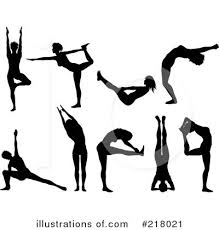
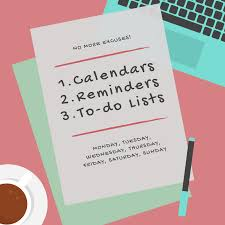

Possibly one of the most important parts of being a great distnce runner is endurance. You aren't going to succeed as a distance runner without an adequate level of endurance. Keep doing weekly or even daily long runs and endurance will build up naturally.
There are many components to being a succesful distance runner and there are even more components involved when you try to balance school on top of it. when it comes to running long distances, it isn't just a physical exercise, it's also a mental one. I believe that running is more than half mental. It is also important that while running you focus on not only the competition and intensity of the race but your breathing as well. This mentality and level of focus will produce amazing running results.
Your legs must be strong. Strong enough to support you and help you run longer distances, this muscular endurance is a key role in running. While you need strong muscles those strong muscles need to have a sufficient range of motion. Many distance runners tend to ignore important flexibility exercises. Be sure to engage in flexibility training consistently. 
Use your weekend as preparation time for the week ahead. This is just as important as staying organized. Start homework for the upcoming week to get ahead of the game and create time to practice. Read chapters and take notes ahead of time. Use this time to plan for and prepare for projects and papers that are due.
You can increase your productivity. By keeping organized, you will save time looking for things and will have more time to work on important tasks.
